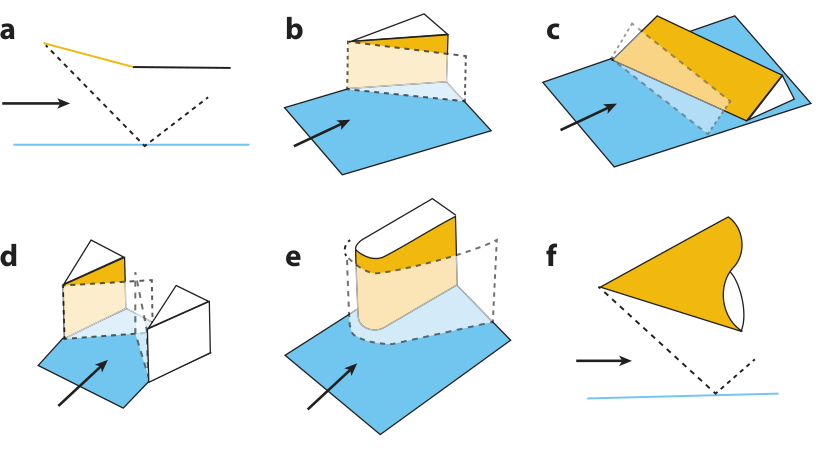
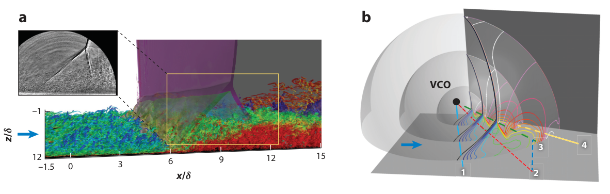
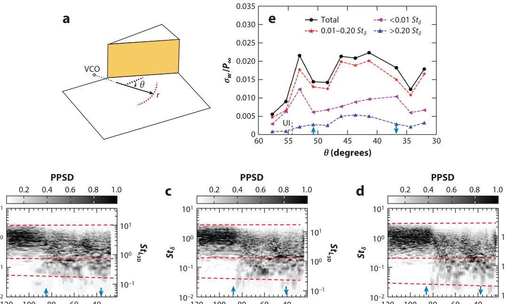
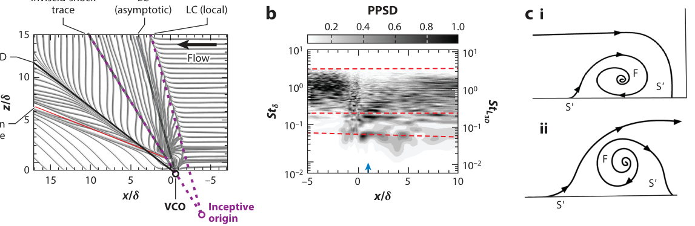

01中文摘要
二维分离激波/湍流边界层干扰测量与理解的进展推动了构型多样的三维STBLI研究。半无限三维干扰呈现锥形渐近行为，激波发生器细节变得不重要；二维与三维分离差异显著，三维分离的偏斜涡结构反映边界层对扫掠激波的三维影响。与二维一样，锥形干扰具有低于湍流边界层的频谱内容，但二维中用于归一化最低频动力学的统一分离长度尺度在三维中缺失；三维频谱更接近二维中频对流剪切层动力学，二维分离激波呼吸现象被削弱。渐近行为在激波发生器附近和对称面等区域按构型方式失效。综述还讨论了三维模态/非模态分析、运动激波、流固耦合与控制等未来方向。
原始摘要（英文/原文）
Advances in measuring and understanding separated, nominally two-dimensional (2D) shock-wave/turbulent-boundary-layer interactions (STBLI) have triggered recent campaigns focused on three-dimensional (3D) STBLI, which display far greater configuration diversity. Nonetheless, unifying properties emerge for semi-infinite interactions, taking the form of conical asymptotic behavior where shock-generator specifics become insignificant. The contrast between 2D and 3D separation is substantial; the skewed vortical structure of 3D STBLI reflects the essentially 2D influence of the boundary layer on the 3D character of the swept shock. As with 2D STBLI, conical interactions engender prominent spectral content below that of the turbulent boundary layer. However, the uniform separation length scale, which is crucial to normalizing the lowest-frequency dynamics in 2D STBLI, is absent. Comparatively, the spectra of 3D STBLI are more representative of the mid-frequency, convective, shear-layer dynamics in 2D, while phenomena associated with 2D separation-shock breathing are muted. Asymptotic behavior breaks down in many regions important to 3D-STBLI dynamics, occurring in a configuration-dependent manner. Aspects of inceptive regions near shock generators and symmetry planes are reviewed. Focused efforts toward 3D modal and nonmodalanalyses, moving-shock/boundary-layer interactions, fluid/structure interactions, and flow control are suggested as directions for future work.
02阅读说明
综述类论文（Annual Review of Fluid Mechanics, 2023, 55:291–321，共34页；正文31页，后3页为期刊目录）。材料为带页码全文、8张已抓图件；图注在双栏OCR中与正文交错，但图1–8的图号、页码与图注主体可读。文章不含实验/数值新数据的方法细节，定量信息散见于正文与图注；未给出系统检索式或纳入标准。提取口径：以“2D基线—3D锥形渐近—非渐近区域—未来方向”为主线。 文章类型：期刊、综述
03一句话核心与三句话摘要
综述指出三维SBLI呈准锥形渐近结构，低频呼吸受抑、以斜剪切层对流不稳定性为主导。
- 问题与缺口：2D STBLI的低频非定常研究已较成熟，但3D构型多样、缺少统一描述，且3D分离拓扑与2D有本质差异。 AI概括
- 方法与发现：以尖鳍等半无限后掠构型为例，综述锥形渐近下的平均流自相似、分离流线不重新附、无全局分离长度尺度，谱内容以中频对流剪切层现象为主。 AI概括
- 结论与意义：锥形渐近框架可统一描述强后掠3D SBLI，但在起始区与对称面附近失效；未来需发展3D模态/非模态分析、运动激波、FSI与控制研究。 原文明确
04核心内容清单
| 要点 | 类型 | 重要性 | 原文依据 | 属性 |
|---|---|---|---|---|
| 综述范围限定为时均分离的强STBLI，覆盖Mach约2–5、Reδ从模拟O(10^5)到实验O(10^6)。 | 范围界定 | A | p292，p295 | 原文明确 |
| 3D构型包括入射激波、尖鳍、后掠压缩拐角、双鳍、钝鳍/平板圆柱、平板上方圆锥；以尖鳍为主线。 | 构型分类 | A | p293，图1 | 原文明确 |
| 2D SBLI存在四个特征频带：StL~0.03呼吸、~0.1二次泡、~0.5剪切层脱落、Stδ~1来流湍流。 | 2D基线 | A | p297–298，图3 | 原文明确 |
| 半无限后掠3D干扰在远场呈锥形渐近：平均量在VCO球坐标下坍塌，λ激波随r线性增长。 | 平均流结构 | A | p300–301，图4b | 原文明确 |
| 3D分离不一定有回流区或零摩阻（除少数临界点），分离流线偏转且从不重新附。 | 分离拓扑 | A | p294，p301–302，图5 | 原文明确 |
| 锥形3D SBLI不存在可跨r通用的全局分离长度尺度，L3D沿弧随r增大。 | 标度限制 | A | p304–306 | 原文明确 |
| 3D SBLI低频band I受抑（峰值Stδ~0.006），主导谱内容为中频剪切层带。 | 非定常特征 | A | p304–305，图6 | 原文明确 |
| 15°尖鳍实验（Reδ~1.5×10^5）显示中频RMS在大部分干扰区占主导，激波脚处低频与中频同时出现峰值。 | 实验证据 | A | p305，图6e | 原文明确 |
| 2D SBLI为绝对不稳定，强后掠3D SBLI最大增益扰动为对流性，未发现绝对不稳定。 | 稳定性 | A | p308 | 原文明确 |
| 起始区长度Linc∝Mnδ^(2/3)，且近前缘出现StL3D~0.05的显著低频峰。 | 非渐近效应 | B | p310–311，图8b | 原文明确 |
| 3D对称面上2D的中心点被稳定焦点取代（马蹄涡），分离流线在对称面上也不重新附。 | 拓扑 | A | p311，图8c | 原文明确 |
| 未来方向：3D模态/非模态分析、运动激波/边界层干扰与不起动、FSI、靠近起始区的流动控制。 | 研究展望 | B | p312–316 | 原文明确 |
05引言：研究问题与领域缺口
SBLI是高速飞行器性能的关键影响因素：激波与另一表面的边界层相交，导致分离、涡结构、湍流调制、流场畸变、多频段非定常与局部热流放大，进而引起操纵面效率下降、阻力增加、燃烧效率降低及结构响应（p292）。作者把SBLI按来流边界层状态分为层流、转捩与湍流，重点讨论激波/湍流边界层干扰（STBLI），并进一步限定为时均存在分离的强干扰（p292）。综述以Dolling(2001)、Clemens & Narayanaswamy(2014)、Gaitonde(2015)、Sandham(2016)等为里程碑，指出Dolling提出的两大未知——非定常性与热流——中，非定常性已有显著进展，而热流机制不在本文范围（p293–294）。核心缺口是：3D SBLI构型多样、激波与边界层相对取向多，2D框架不能直接套用；3D分离不一定伴随回流区、分离流线不重新附，甚至在对称面上也如此（p294）。文章目标是聚焦3D SBLI动力学的新认识，以半无限后掠构型的锥形渐近行为作为统一框架，再讨论起始区和对称面等偏离（p293–295）。综述覆盖Mach约2–5、基于来流边界层厚度的Reδ从模拟的O(10^5)到实验的O(10^6)（p295）。
06流动条件与几何构型
| 项目 | 数值/描述 | 依据 | 备注 |
|---|---|---|---|
| 来流Mach数范围 | 约2–5 | p295 | 综述覆盖范围，非单一工况 |
| Reynolds数范围 | 基于来流边界层厚度Reδ：模拟O(10^5)，实验O(10^6) | p295 | 许多模拟为计算可行性低一个量级 |
| 干扰强度 | 重点为时均分离的强干扰 | p292 | 弱/初始分离仅在说明问题时提及 |
| 构型1 | 入射激波（impinging shock） | p293，图1a | |
| 构型2 | 尖鳍（sharp fin, SF） | p293，图1b | |
| 构型3 | 后掠压缩拐角（swept compression ramp, SCR） | p293，图1c | |
| 构型4 | 双鳍（double fin, DF） | p293，图1d | |
| 构型5 | 钝鳍或平板圆柱（blunt fin / cylinder-on-plate, BF/CoP） | p293，图1e | |
| 构型6 | 平板上方圆锥（cone above plate, CaP） | p293，图1f | |
| SF谱计算工况 | 22°鳍，Mach 2，Reδ≈1.6×10^4 | p304，图6b–d | 作者自身模拟 |
| SF谱实验工况 | 15°鳍，Reδ≈1.5×10^5，VCO弧半径约13δ | p305，图6e | Arora等实验 |
| 2D入射激波实验工况 | 转折角7.1°<θ<9.5° | p297，图3a | |
| 谱探针位置 | VCO同心弧r/δ=2、6、10 | p304，图6b–d | |
| SCR谱分带 | Stδ<0.01、0.01<Stδ<0.1、Stδ>0.1 | p306 | Vanstone & Clemens(2019)的分带 |
| 壁温/热流 | 本文不讨论热流机制 | p294 | Dolling(2001)提出的热流问题留待未来 |
| 二维/三维性质 | 2D时均、瞬时三维；3D为后掠/锥形或圆柱形对称 | p292–293，p302–303 |
07核心现象与关键参数
| 参数 | 定义 | 数值 | 关系/说明 | 依据 |
|---|---|---|---|---|
| StL | 以分离长度L为尺度的Strouhal数，StL=fL/U∞ | band I~0.03；band II~0.1；band III~0.5 | 2D低频归一化尺度；3D中无对应全局尺度 | p297–298，图3 |
| Stδ | 以来流边界层厚度δ为尺度的Strouhal数，Stδ=fδ/U∞ | band IV~1；3D中低频峰对应Stδ~0.006 | 以来流湍流尺度归一化 | p298，p304–305 |
| StL3D | 沿VCO弧线、以局部LC–LD距离L3D为尺度的Strouhal数 | 图6右轴所用局部分离尺度；随r变化，文中未给统一数值（3D起始区低频峰约0.05） | 锥形3D的局部分离尺度；与2D的StL不能直接等同 | p304，p310，图6、图8b |
| L3D | 沿VCO同心弧从LC到LD的距离，用作局部分离长度 | 随r增大，无固定值 | 非全局尺度，不能跨r通用 | p304–306 |
| Linc | 偏离锥形渐近的起始区长度 | Linc∝Mnδ^(2/3) | 随法向Mach数与δ增大 | p310 |
| Uc | 分离区相干结构对流速度 | 约0.3U∞ | 与2D相近，对3D干扰强度不敏感 | p308 |
| r/δ | 距VCO的径向距离以δ归一化 | 2、6、10（谱）；14（图7球面） | 检验锥形坍塌 | p304，p307，图6–7 |
| Reδ（SF模拟） | 以来流边界层厚度为参考长度的Reynolds数 | ≈1.6×10^4 | 22°鳍、Mach 2 | p304 |
| Reδ（SF实验） | 同上 | ≈1.5×10^5 | 15°鳍 | p305 |
| 鳍角/后掠角 | 尖鳍相对来流的偏转角 | 22°（模拟）、15°（实验） | 控制干扰强度 | p304–305 |
08方法与数据
本文是叙述性综述，不是实验或数值研究：作者明确说明“Key points are elaborated using figures from the authors’ own computational work”，选用自身计算图仅为方便，并承认因篇幅与视角所限遗漏了部分相关文献（p295）。综述范围限定于图1所示典型构型：入射激波、尖鳍（SF）、后掠压缩拐角（SCR）、双鳍（DF）、钝鳍/平板圆柱（BF/CoP）、平板上方圆锥（CaP）；以SF为主线讨论后掠渐近特征，再与其他构型比较（p293，p295）。方法学上综合了三类证据：经典油流/纹影与表面压力、摩阻、热流测量及皮托压力场测量；现代PSP、高速纹影、立体/层析PIV、光场相机等诊断；以及高保真模拟、全局稳定性/模态与非模态分析、resolvent分析、POD、动态线性响应和带通滤波（p295，p305，p307–308）。文章结构为：第2节总结2D SBLI并更新；第3.1节讨论渐近后掠相互作用的平均流结构，第3.2节讨论其非定常表征，第3.3节讨论起始区与对称面；第4节给出未来方向（p295）。文中未给出文献检索数据库、检索式、时间范围或纳入/排除标准（文中未提及）。
| 项目 | 内容 | 依据 | 备注 |
|---|---|---|---|
| 综述类型 | 叙述性综述，非系统检索；以作者自身计算图辅助说明 | p295 | 承认遗漏部分文献 |
| 证据来源 | 经典油流/纹影、表面压力/摩阻/热流测量、皮托压力场；现代PSP、高速纹影、立体/层析PIV、光场测量 | p294–295 | |
| 数值手段 | 高保真模拟（可分辨湍流时空尺度）、RANS历史结果、LES/DNS文献 | p294–295 | |
| 稳定性/动力学分析 | 全局模态、非模态/resolvent、动态线性响应、POD、带通滤波 | p298–299，p307–308 | |
| 平均流拓扑 | 临界点理论（center、saddle、focus、node）与表面流线LC/LD分析 | p296，p301，p311 | |
| 锥形坐标分析 | 以VCO为原点的球坐标(r,θ)，在同心球面/弧线上比较平均量与谱 | p301，p304，图4、图6 | |
| 谱归一化 | 预乘PSD；局部归一化与全局归一化；Stδ与StL3D双轴 | p298，p304 | |
| 带通分解 | 按Stδ<0.01、0.01–0.2、>0.2分带计算RMS壁压 | p305，图6e | |
| 检索范围/纳入标准 | 文中未提及 | 全文 | 未给数据库、检索式、时间窗 |
09核心推导与公式
原文未给出从守恒律出发的完整解析推导；以下仅列出材料中可核对的定义或建模链，不补写教科书推导。
本文为综述，未从控制方程出发建立新的理论或给出推导链。正文只使用 StL=fL/U∞、Stδ=fδ/U∞、StL3D=fL3D/U∞ 等 Strouhal 数定义，以及俯仰角 arctan(v/u)、偏航角 arctan(w/u) 等量定义来组织实验/计算结果的比较，并引用经验标度 Linc∝Mnδ^(2/3) 与对流速度约 0.3U∞；这些均非推导。
关键假设
- 无新增理论假设；综述以时均分离的强STBLI为对象（p292）
- 锥形渐近假设：远场平均量在以VCO为原点的球坐标下近似坍塌（p301）
- 2D与3D的对比以相同来流边界层厚度δ为参考（p295）
适用边界：上述关系均为定义或经验标度，不能当作理论推导；Linc∝Mnδ^(2/3)引自经典文献，适用条件与系数原文未展开；StL3D随r变化，不能作为全局归一化尺度（p304–306）；综述未给出从Navier–Stokes方程到这些标度的推导。
10结果：主要发现与关键证据
2D基线（第2节）：入射激波与压缩拐角可互换使用；平均流拓扑含中心C与两个表面鞍点S'，表面流线由分离线LC与再附线LD界定，L为分离长度（p296–297，图2）。壁压预乘PSD显示四个频带：band I（StL~0.03）为相互作用呼吸与大尺度分离激波运动；band II（StL~0.1）为二次泡振荡；band III（StL~0.5）为分离剪切层大尺度相干结构脱落与反射激波拍动；band IV（Stδ~1）为来流边界层积分尺度湍流对流与调制（p297–298，图3）。3D平均流（第3.1节）：SF远场呈锥形对称，平均量在以虚拟锥原点VCO为中心的球坐标下坍塌，λ激波随径向距离r线性增长，三激波点轨迹在渐近极限下为从VCO出发的直线（p300–301，图4b）。3D分离拓扑与2D不同：分离流线偏转离开激波发生器且从不重新附；附体流来自外侧无粘流，形成“outer/inner regimes”与斜剪切层（p301–302，图5）。锥形相互作用无全局分离长度尺度，沿弧线定义的L3D随r增大（p304–306）。3D非定常（第3.2节）：SF在Mach 2、Reδ~1.6×10^4、22°鳍下，壁压谱沿VCO同心弧随θ变化；相对2D，低频band I被显著抑制，其峰值对应Stδ~0.006，主导内容为中频剪切层带，且在锥形坐标下有一定坍塌（p304–305，图6b–d）。实验（15° SF，Reδ~1.5×10^5，弧半径约13δ）显示中频分量在大部分相互作用区占主导，激波脚处中频与低频同时出现峰值；λ结构尺寸随时间变化，较小λ在统计上更可能（p305，图6e）。稳定性上，2D SBLI表现为绝对不稳定、自维持反馈；后掠3D SBLI中最大增益扰动为对流性，未发现绝对不稳定（p308）。剪切层结构对流速度约0.3U∞，与2D相近且对3D干扰强度不敏感（p308）。非渐近区域（第3.3节）：起始区长度Linc∝Mnδ^(2/3)，随法向Mach数与边界层厚度增大（p310）；近鳍前缘处出现更显著的低频峰，StL3D~0.05（图8b，p310–311）。对称面上，2D的中心点被稳定（向内螺旋）焦点取代，对应马蹄涡；分离流线即使在对称面上也不重新附（p311，图8c）。DF可视为两个准锥形相互作用的复合，中心区出现一对流向涡，并出现类似2D的低频带但不一定同机制（p312）。
| 发现 | 证据 | 证据类型 | 强度 | 位置 | 属性 |
|---|---|---|---|---|---|
| 半无限后掠3D SBLI在远场呈锥形渐近，平均流在VCO球坐标下坍塌，激波发生器细节变得不重要。 | 摘要“conical asymptotic behavior where shock-generator specifics become insignificant”；图4b在VCO同心球面上绘平均压力，λ激波随r线性增长（p291，p301）。 | 平均流结构 | 强 | p291摘要；p300–301，图4b | 原文明确 |
| 3D分离拓扑与2D本质不同：不必然出现回流或零摩阻，分离流线偏转且从不重新附。 | p294明确陈述；图5b显示分离流线与附体流来自不同区域，附体流不是再附流（p301–302）。 | 拓扑 | 强 | p294；p301–302，图5 | 原文明确 |
| 锥形3D SBLI不存在可跨径向距离通用的全局分离长度，L3D随r增大。 | 原文称“no global length scale ... is apparent”，并以Stδ与StL3D双轴标示谱（p304–306，图6）。 | 标度 | 强 | p304–306，图6 | 原文明确 |
| 相对2D，3D后掠SBLI的低频band I受抑，主导谱内容为中频剪切层带；band I峰值对应Stδ~0.006。 | 图6b–d的预乘壁压谱与图3对比；正文明确“suppressed low-frequency band”与“most prominent band ... mid-frequency”（p304–305）。 | 谱特征 | 强 | p304–305，图6 | 原文明确 |
| 15°尖鳍实验（Reδ~1.5×10^5）中，中频分量在大部分干扰区主导RMS壁压，激波脚处低频与中频同时出现峰值。 | 图6e按Stδ<0.01、0.01–0.2、>0.2分带给出σp/Pw沿θ分布；正文说明较小λ统计上更可能（p305）。 | 实验 | 强 | p305，图6e | 原文明确 |
| 2D SBLI为绝对不稳定，强后掠3D SBLI最大增益扰动为对流性，未发现绝对不稳定。 | 对3D SCR施加随机脉冲强迫的动态线性响应分析；2D扰动自维持并局限于分离区，3D扰动对流传播（p308）。 | 稳定性 | 中 | p308 | 原文明确 |
| 3D分离区相干结构对流速度约0.3U∞，与2D相近且对干扰强度不敏感。 | 正文给出“A representative convective speed ... is 0.3U∞”，并与Aubard等2D结果比较（p308）。 | 定量 | 中 | p308 | 原文明确 |
| 起始区偏离锥形渐近，其长度Linc∝Mnδ^(2/3)，近前缘出现StL3D~0.05的显著低频峰。 | Linc标度引自Settles & Lu(1985)；图8b在z/δ=0.5处绘PPSD随x变化，峰值靠近分离激波脚（p310–311）。 | 非渐近 | 中 | p310–311，图8b | 原文明确 |
| 3D对称面上2D的中心点被稳定焦点取代，对应马蹄涡；分离流线在对称面上也不重新附。 | 图8c,i的对称面流线示意与图2b对比；正文指出∂w/∂z非零、展向缓解效应在2D中不存在（p311）。 | 拓扑 | 中 | p311，图8c | 原文明确 |
11机制解释与论证链
论证链（前提→证据→推论→结论）：前提——3D后掠干扰中，分离流线与附体流来自不同区域：分离流来自来流边界层，附体流来自已被激波处理过的外层无粘流，二者形成斜剪切层与夹带流（p301–302，图5）。证据1——平均流呈锥形对称，λ激波与三激波点轨迹随r线性增长，表面LC/LD/IST均近似从VCO出发（p300–301，图4b）；但LC与LD发散，L3D随r增大（p304）。证据2——壁压谱在锥形框架下有一定坍塌，但低频band I受抑，主导为中频剪切层带；实验RMS也以中频为主（p304–305，图6）。证据3——动态线性响应显示2D最大增益扰动自维持并局限于分离区（绝对不稳定），3D最大增益扰动为对流性（p308）。推论——3D中缺少2D那样的闭合对流回路与全局分离长度，低频呼吸机制失去主导地位；中频内容由斜剪切层的对流不稳定性及内外两层斜向对流的分压干涉产生周期性（p307–308）。结论——3D SBLI动力学应以“锥形渐近+斜剪切层对流”描述，2D的呼吸图像只在起始区/对称面等局部区域有条件地类比（p316）。以上“失去主导地位”的因果表述为AI概括，原文明确说“breathing is relatively muted”和“convective in nature”。
12讨论：结论、贡献与局限
作者主张：3D SBLI的多样性可通过“锥形渐近+构型相关修正”来组织；强后掠渐近相互作用的动力学与2D有本质区别，低频呼吸被抑制而中频对流剪切层动力学更突出（p316）。机制上，3D分离流线不重新附、无闭合对流回路，且分离与附体流分别来自边界层与外层无粘流，形成斜剪切层与夹带流，这打破了2D中用单一分离长度L归一化低频的框架（p301–306）。稳定性分析进一步表明，2D的绝对不稳定在强后掠3D中变为对流不稳定，因此2D的呼吸机制在3D中不占主导（p308）。在起始区与对称面，锥形对称失效：起始区受前缘钝度、边界层增长与Reynolds数影响，对称面的拓扑（焦点、马蹄涡、无再附）与2D不同，不能简单把2D机理移植过来（p309–311）。局限：热流机制未覆盖（p294）；文献覆盖不完整且以作者自身计算图为主（p295）；起始区Reynolds数依赖尚未完整表征（p311）；DF、CoP、CaP等非渐近构型的Mach/Re依赖不足（p312）；3D稳定性/非模态分析计算代价大（p313）。未来方向包括：复杂3D SBLI与天地换算标度律、斜剪切层的稳定性/resolvent分析、运动激波/边界层干扰与不起动、角区/侧壁约束、FSI与气动热弹性、以及靠近起始区布置的被动/主动控制（p312–316）。
作者结论
作者结论：3D SBLI的多样性可通过锥形渐近框架获得统一描述，再以构型相关偏离补全。强后掠渐近3D SBLI与2D的关键差别是：低频非定常更具对流性、与分离剪切层相关，而相互作用呼吸相对受抑；这源于平均流中2D与3D剪切层长度尺度的空间混合。2D稳定性研究为3D分析提供框架，3D更强的对流性也体现在主导不稳定性质上。起始区与对称面的动力学变化具有启发性，但把2D特征与这些区域关联时必须谨慎。作者据此提出复杂3D SBLI标度、运动激波/不起动、FSI与控制等未来方向（p316）。
主要贡献
- 以锥形渐近为统一框架组织3D SBLI的平均流、非定常与稳定性认识，并明确其失效区域（p295，p316）。
- 系统对比2D与3D分离拓扑，指出3D分离无回流、无再附、无全局分离长度（p294，p301–306）。
- 综合谱分析、稳定性/非模态分析与实验RMS，给出3D中低频受抑、中频对流主导的图景（p304–308）。
- 区分起始区与对称面两类非渐近区域，并指出2D类比的适用边界（p309–311）。
- 提出运动激波/不起动、FSI与控制等未来研究方向，并强调起始区作动器布置（p312–316）。
局限与未解决问题
作者承认：热流机制不在综述范围（p294）；文献覆盖不完整，部分相关工作因篇幅与视角遗漏，且图解主要取自作者自身计算（p295）；起始区Reynolds数依赖尚未完整表征（p311）；DF、CoP、CaP等非渐近构型的Mach/Re依赖不足（p312）；3D稳定性/非模态分析计算代价大（p313）。AI识别：综述未给系统检索式与纳入标准，不能视为穷尽性综述；许多定量结论来自特定构型（22°/15°尖鳍、Mach 2），向其他Mach/Re/构型外推需谨慎（AI推断）；“2D与3D频率不能直接对应”这一点作者已明确，但3D中频带的统一长度尺度仍未解决（p306）。
13对高速流动与工程的意义
对高速流动/工程的意义：3D SBLI是进气道、隔离器、角区与翼面/尾翼等实际构型的常态，而非例外；综述给出的锥形渐近框架可用于组织平均流标度、判断地面试验与飞行条件的差异，并提示不能用2D的分离长度L直接归一化3D低频载荷（p304–306，p316）。对进气道/隔离器：运动激波与不起动涉及3D分离与角区/侧壁耦合，是未来重点（p313）。对结构与控制：3D谱向中频偏移、相干结构随r增长而频率下降，可能与大尺寸面板频率重叠，FSI仍需研究；控制应靠近起始区布置，微射流质量流量比激励频率更关键（p314–316）。不能回答的问题：热流峰值机制、3D中频带的唯一归一化长度、起始区Re依赖的定量标度（文中未解决）。
14核心图件




15可引用原文素材
| 原文短句 | 可支持的观点 | 位置 | 使用建议 |
|---|---|---|---|
| “specifics become insignificant” | 锥形渐近下激波发生器细节不影响远场 | p291，摘要 | 说明锥形框架的普适性 |
| “never reattach” | 3D分离流线不重新附 | p302 | 对比2D分离拓扑 |
| “no global length scale” | 锥形3D无通用分离长度 | p306 | 讨论标度律局限 |
| “convective in nature” | 3D最大增益扰动为对流性 | p308 | 支撑3D以对流不稳定为主 |
| “breathing is relatively muted” | 3D中相互作用呼吸受抑 | p316，结论 | 概括3D与2D的核心差别 |
| “Linc ∝ Mnδ2/3” | 起始区长度标度 | p310 | 引用起始区效应 |
| “0.3U∞” | 3D相干结构对流速度 | p308 | 与2D剪切层速度对比 |
16最终核验
| 核验项 | 结论 |
|---|---|
| 仅基于全文 | 是。全部结论来自bundle全文、图注与图1–8；未引用外部文献结论；涉及他人工作时仅转述本文的引用与描述。 |
| A 级要点有依据 | 是。A级要点均给出页码/节/图号：p291摘要、p294、p297–298图3、p300–302图4–5、p304–306图6、p308、p311图8。 |
| 属性标注 | 是。three_sentence、core_points、findings均标【原文明确】【AI概括】【AI推断】；机制段对因果性概括已注明AI概括。 |
| 覆盖范围 | 覆盖IMRaD四节、2D基线、3D平均流/非定常/非渐近、稳定性、FSI、控制与未来方向；图注完整转录，定量结论均带位置。 |
| 无编造 | 未编造页码、图号、数据或公式；图中具体数值（如StL~0.03、Stδ~0.006、0.3U∞、Linc∝Mnδ2/3）均逐字取自bundle；未给出原文没有的Mach/Re具体值。 |
需回原文确认
- 3D中频带是否存在类似2D分离长度L的统一归一化尺度？原文明确称尚未解决。
- 起始区效应的Reynolds数依赖如何定量标度？原文称尚未完整表征。
- 热流峰值与3D SBLI非定常的耦合机制是什么？本文明确不讨论。
- DF/CaP/CoP等非渐近构型的Mach/Re依赖与天地换算如何建立？
- 3D绝对不稳定缺失的结论是否对所有后掠角与干扰强度成立？原文仅给SCR算例。
- 如何将3D稳定性/非模态分析用于作动器最优布置？
- 图6e中低频峰与中频峰在激波脚同时出现，哪个机制主导？原文未定论。
17关联文献
依据标签、板块、构型与作者脉络自动关联，可据此追踪同一问题的前序与后续工作。
18引用格式
选择期刊风格后复制；出处保留原刊名。BibTeX 可直接用于 LaTeX。
引用格式
Gaitonde, D. V. & Adler, M. C. 2023 Dynamics of Three-Dimensional Shock-Wave/Boundary-Layer Interactions. Annual Review of Fluid Mechanics 55 (1), 291–321. https://doi.org/10.1146/annurev-fluid-120720-022542
PDF上传 PDF 并更新本页
本页缺少全文、摘要或图件时，可在浏览器本地补入 PDF。解析完全在本机完成，不上传网络；完成后会更新本页的 PDF 打开链接、原摘要、IMRaD 机器抽取、关键句与含图页面。复杂的公式语义与中文深度解读仍以原文和既有精读记录为准。